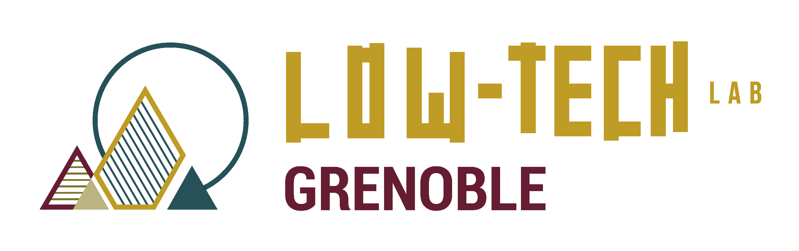

 
Présentation de l'asso
Le Low-tech Lab Grenoble est une association loi 1901 reconnue d’intérêt général. Fondée en 2019, l’association promeut la démarche Low-tech et les systèmes low-tech (technologies et savoirs répondant aux critères utile, durable et accessible). Elle représente l’antenne grenobloise du large archipèle des Low-tech Labs.
Objet de l’association : développer la résilience locale et collective, diffuser savoirs et techniques simples et accessibles aux citoyens, promouvoir et rechercher des solutions qui répondent à des problématiques d’habitat, d’autonomie en eau, énergie, alimentation ou matériaux, pour un meilleur respect de la nature, des cultures et des ressources propres à chaque territoire.
Comment nous rejoindre ?
Vous avez envie de nous rendre visite ? Vous êtes curieux.se des low-tech ? Vous voulez en savoir plus sur l’association ? Venez aux forums de l’association ! C’est tous les premiers mercredis du mois au local de l’asso (18h). On y parle low-tech, transition, écologie, projets personnels, … Et on cuisine au cuiseur bois pour celleux qui sont là ! Bref de bons moments conviviaux pour échanger toustes ensemble !
Pour les adhérents de l’association, on propose un temps collectif tous les 3e mercredis du mois au local (18h). C’est un temps collectif de partage (débat, cercle de parole, savoir-faire, bricolage, …)
Pour les bénévoles investis dans la CA, les 2e mercredi du mois nous organisons la réunion de gouvernance partagé au local (18h). On parle des projets de l’association, des stratégies de l’association, des sujets de gouvernance, des prises de décision, … Le tout de manière partagée et ouverte !
Ils nous soutiennent !
Institutions
Partenaires
Nous travaillons ensemble !
- Actis
- Mairies sur le projet Abbaye
- SolarFire
- Kerlotec
- ENSAM
- Parc régional des Monts d’Ardèche
- Scouts et Guides de France
- INRAE
- La Ligue de l’Enseignement 38
- Bar Radis
- Au Local
- Laboratoire PACTE
- IUGA
- UGA
- ENSE3 et Grenoble-INP
- Au Grès du Soleil
Devenez mécène !
Vous souhaitez faire du mécénat avec l’association ? C’est possible ! Savez-vous qu’il existe 3 types de mécénat ?
- Le mécénat financier, le plus connu.
- Le mécénat en nature, il s’agit de donner du matériel ou prêter des biens (local, outillages, matériaux, …)
- Le mécénat de compétences, il s’agit de mettre à disposition pour l’association du temps de travail d’un employé d’une entreprise (et de la fonction publique aussi !). Plein de compétences peuvent être valorisées à travers le mécénat de compétence : comptabilité, développement web, communication, juridique, ingénierie, artisanat, coup de main, …
Ces 3 types de mécénat sont défiscalisables sur vos impôts (particulier et entreprise). Si vous êtes intéressé.e, contactez-nous !